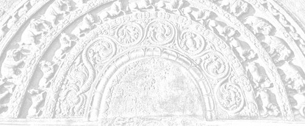

Sermon 11
Namo tassa bhagavato arahato sammāsambuddhassa
Namo tassa bhagavato arahato sammāsambuddhassa
Namo tassa bhagavato arahato sammāsambuddhassaEtaṁ santaṁ, etaṁ paṇītaṁ,
yadidaṁ sabbasaṅkhārasamatho sabbūpadhipaṭinissaggo
taṇhakkhayo virāgo nirodho nibbānaṁ.1“This is peaceful, this is excellent,
namely the stilling of all preparations, the relinquishment of all assets,
the destruction of craving, detachment, cessation, extinction.”
With the permission of the Most Venerable Great Preceptor and the assembly of the venerable meditative monks.
This is the eleventh sermon in the series of sermons on Nibbāna. In our last sermon, we tried to explain that contact arises dependent on name-and-form, because form gets a verbal impression by the naming quality in name, and name gets a resistance-impression by the striking quality in form. In the context of this Dhamma, contact, properly so-called, is a combination of these two, namely verbal impression and resistance-impression.
We also happened to mention the other day a new etymological explanation given by the Buddha to the word rūpa, quoting the relevant passage from the Khajjanīyasutta of the Khandhasaṁyutta in the Saṁyutta Nikāya. He has defined the form group with reference to ‘affectation’:
Ruppatī’ti kho, bhikkhave, tasmā rūpan’ti vuccati.2
It is affected, monks, that is why it is called form. By what is it affected? By cold, heat, hunger, thirst, and the sting of gadflies, mosquitoes and the like.
While analysing the implications of this ‘being affected’, we mentioned that the form group could be compared to a wound. According to the commentarial exegesis, too, ruppati means to be adversely affected, to be afflicted, to come into conflict with, to be diseased and displeased. These are reminiscent of the responses usually associated with the person who has an easy lacerable wound. To say that a paṭighasamphassa arises because of this lacerable quality is therefore very apt.
The primary sense of the word paṭigha is ‘striking against’. Perception of form arises as a result of an attempt to understand through the factors on the name side this particular striking against, which resembles the laceration of a wound.
This perception of form, which follows in the wake of the feeling that arises when something strikes against form, is like the groping of a blind man in the dark. Generally, the worldling is in the habit of staring at the form that comes within his grasp, to ascertain its true nature. Likewise, he touches the form he sees with his eyes to verify it. As the saying goes: “Seeing is believing, but touch is the real thing”.
But both these attempts are like the gropings of a blind man. The worldling is unable to get rid of his delusion completely by either of these methods. It is because he is accustomed to draw conclusions under the influence of his perception of the compact, ghanasaññā.
The fact that the two extreme views of existence and non-existence are also the outcome of this perception of the compact in regard to form, is borne out by the following two lines of the verse we quoted from the Kalahavivādasutta in our previous sermon.
Rūpesu disvā vibhavaṁ bhavañca, vinicchayaṁ kurute jantu loke.3
Having seen the existence and destruction of material forms, a man in this world comes to a conclusion.
The worldling has the idea that material forms have an absolute existence. This idea is the result of his perception of form. It is a perception arising out of his impression of that ‘striking against’. Whatever the level of this perception of form be, it is not better than the impression of a blind man. The two extreme views of absolute existence and non-existence in the world are based on this kind of impression.
Various types of views and opinions current in the world regarding material forms and matter in general, are the outcome of the notion that they are absolutely real. There is a tendency in the worldling to presume that what he grasps with his hands and sees with his eyes exists absolutely. So a thing is said to exist for some length of time, before it gets destroyed.
The logical conclusion, then, is that all things in the world exist absolutely and that at some point of time they get absolutely destroyed. This is how the two extreme views of absolute existence and absolute non-existence have arisen in this world. This is the outcome of a perception of form, which is tantamount to a pursuit of a mirage. It is an illusion.
The Buddha has declared, in the Jaṭāsutta, that where name-and-form as well as resistance and perception of form are cut off and surcease, there the entire saṁsāric problem, which amounts to a tangle within and a tangle without, is also conclusively solved.4 That this is so could be inferred to some extent from what we have discussed so far.
Nāma and rūpa, as well as paṭigha- and rūpasaññā, are highly significant terms. Paṭigha- and rūpasaññā are equivalent to paṭighasamphassa and adhivacanasamphassa respectively. Now as to this perception of form, it is basically conditioned by contact. That is why the Kalahavivādasutta states that contact is the cause of the two views of existence and non-existence.
In this Kalahavivādasutta one finds a series of questions and answers going deeper and deeper into the analysis of contact, step by step.
The question phasso nu lokasmiṁ kutonidāno, “what is the cause of contact in this world?”; gets the answer nāmañca rūpañca paṭicca phasso, “dependent on name-and-form is contact”.5
The next question is: Kismiṁ vibhūte na phussanti phassā, “in the absence of what, do contacts not bring about contact”, or, “touches do not touch?” It gets the answer: Rūpe vibhūte na phusanti phassā, “in the absence of form, contacts do not bring about contact”.
The question that comes up next, and the answer given, are extremely important. They lead to a deep analysis of the Dhamma, so much so that both verses deserve to be quoted in full. The question is:
Kathaṁsametassa vibhoti rūpaṁ,
sukhaṁ dukhaṁ vā pi kathaṁ vibhoti,
etaṁ me pabrūhi yathā vibhoti,
taṁ jāniyāmā iti me mano ahu.6To one constituted in which manner does form cease to exist,
Or, how even pleasure and pain cease to exist,
Do tell me how all these become non-existent,
Let us know this, such a thought arose in me.
The answer to this question is couched in this extraordinary verse:
Na saññasaññī na visaññasaññī,
no pi asaññī na vibhūtasaññī,
evaṁ sametassa vibhoti rūpaṁ,
saññānidānā hi papañcasaṅkhā.7
What this verse purports to describe is the state of a person for whom form as also pleasure and pain has ceased to exist. He is not one with normal perception, nor is he one with abnormal perception. He is not non-percipient, nor has he rescinded perception. It is to one constituted in this manner that form ceases to exist, for, papañcasaṅkhā – whatever they may be – have perception as their source.
The meaning of this verse needs to be clarified further. According to the Mahāniddesa, the allusion in this verse is to one who is on the path to the formless realms, having attained the first four absorptions.8 The commentary is forced to that conclusion, because it takes the phrase na vibhūtasaññī as negating formless realms as such. The assumption is that the person referred to is neither conscious with normal perception, nor abnormally unconscious, nor devoid of perception, as in the attainment of cessation, nor in one of the formless attainments. So then, the only possibility seemed to be to identify it with some intermediate state. That is why the Mahāniddesa and the other commentaries interpret this problematic state as that of one who is on the path to formless attainments, arūpamaggasamaṅgi.9
However, considerations of context and presentation would lead to a different conclusion. The extraordinary state alluded to by this verse seems to be a surpamundane one, which goes far deeper than the so-called intermediate state. The transcendence of form, indicated here, is more radical than the transcendence in attaining to formless states. It is a transcendence at a supramundane level, as we may well infer from the last line of the verse, saññānidānā hi papañcasaṅkhā.
Papañcasaṅkhā is a term which has a relevance to insight meditation and the denouement of the sutta is also suggestive of such a background.
The Kalahavivādasutta, consisting of sixteen verses, is, from beginning to end, a network of deep questions and answers leading to levels of insight. The opening verse, for instance, states the initial problem as follows:
Kuto pahūtā kalahā vivādā,
paridevasokā sahamaccharā ca,
mānātimānā saha pesuṇā ca,
kuto pahūtā te tad iṅgha brūhi.10Whence do spring up contentions and disputes,
Lamentations, sorrows and envies,
And arrogance together with slander,
Whence do they spring up, pray tell me this.
It is in answer to this basic question that this discourse gradually unfolds itself. In accordance with the law of dependent arising, the cause of contentions and disputes is said to be the tendency to hold things dear, piyappahūtā kalahā vivādā.
Then the question is about the cause of this idea of holding things dear. The cause of it is said to be desire, chandanidānāni piyāni loke. Things dear originate from desire. Desire, or interest, makes things ‘dear’.
The next question is: What is the origin of desire? Desire is traced to the distinction between the pleasant and the unpleasant. It is in reply to the question regarding the origin of this distinction between the pleasant and the unpleasant that contact is brought in.
In fact, it is the question as to the origin of contact, phasso nu lokasmiṁ kuto nidāno, which formed the starting point of our discussion. The answer to that question is name-and-form, nāmañca rūpañca. So in this chain of causes, the link that comes next to contact is name-and-form.
Now the verse in question beginning with na saññasaññī goes deeper than name-and-form. Even the question about contact has a peculiar wording: Kismiṁ vibhūte na phusanti phassā, “When what is not there, do touches not touch?”
The question, then, is not just the cessation of contact as such. The answer, too, has the same peculiarity. Rūpe vibhūte na phusanti phassā, “It is when form is not there that touches do not touch”. It is the subsequent question regarding form that brings out the cryptic verse as the answer.
All this goes to show that the verse in question alludes to a supramundane state far transcending the formless or any supposed intermediate stage. The transcendence of pleasure and pain, as well as perception of form, is implied here.
The verse beginning with na saññasaññī brings the entire analytical disquisition to a climax. It comes as the thirteenth verse in the series. Usually, such a disquisition leads up to a climax, highlighting Nibbāna. It is obvious, therefore, that the reference here is to the Nibbānic mind.
We have here four negations: Na saññasaññī – na visaññasaññī – no pi asaññī – na vibhūtasaññī. These four negations insinuate a strange supramundane level of perception. In short, it is an attempt to analyse the crux of the Dhamma in terms of perception. As to the provocation for such an approach, we may remind ourselves of the fact that, according to the Buddha, release from materiality amounted to a release from the perception of form. Here, we have something really deep.
As it was stated in the Jaṭāsutta, for the disentangling of the tangle, name-and-form, resistance and perception of form, have to be cut off. This last mentioned perception of form, or rūpasaññā, is highly significant.
Before the advent of the Buddha the general belief, even among ascetics, was that, in order to be free from form, one has to attain to the formless, arūpa, But, as we pointed out in an earlier sermon, this kind of approach to the question of freedom from form, is like the attempt of one who, having imagined a ghost in the darkness of the night, runs away to escape it.11 He is simply taking the fantasy of the ghost with him.
Likewise, perception of form is already implicit in the formless. What has been done is only a pushing away of the perception of form with the help of saṅkhāras. It is merely a suppression of form through the power of absorption. It does not amount to a cessation of the perception of form.
What, then, is the message the Buddha gave to the world regarding the abandonment by way of eradication? He pointed out that freedom from form can be won only by comprehending a certain deep normative principle behind perception.
Till then, one keeps on going round and round in saṁsāra. Even if one breaks away from form to stay for aeons in formless realms, one swings back to form at the end of that period. Why? Because the ghost of form still haunts the formless. It is precisely because of this fact that pre-Buddhistic ascetics could not free themselves from the round of existence.
The Kalahavivādasutta as a whole, could be regarded as an extremely deep analysis of the basis of the two views of existence and non-existence. Our departure from the Mahāniddesa in regard to the interpretation of this discourse might sometimes be called in question. But let the wise judge its reasonableness on its own merits.
According to our interpretation so far, the thirteenth verse marks the climax of the discourse, with its allusion to Nibbāna. This is obvious from the fourteenth verse, in which the questioner confesses:
Yaṁ taṁ apucchimha akittayī no, aññaṁ taṁ pucchāma tad iṅgha brūhi.12
Whatever we have asked you, that you have explained to us. Now we wish to ask you something else, pray, give us an answer to that too.
The question now posed is this:
Ettāvataggaṁ nu vadanti h’eke, yakkhassa suddhiṁ idha paṇḍitāse, udāhu aññam pi vadanti etto?
Do some, who are reckoned as wise men here, declare the highest purity of the soul with this much alone, or else do they posit something beyond this?
The interlocutor is trying to get the solution restated in terms of the two views of existence and non-existence. The term yakkha is used in this context in the sense of an individual soul.13
It betrays an assumption based on a wrong view. The question concerns the purity of the individual soul. The interlocutor wants to ascertain whether wise men in the world declare this state as the highest purity of the soul, or whether they go beyond this in postulating something more. Here is an attempt to get the answer already given restated in terms of the soul theory, a sort of anti-climax. The two concluding verses that follow, give the lie to this presumptuous question.
Ettāvataggaṁ pi vadanti h’eke
yakkhassa suddhiṁ idha paṇḍitāse,
tesaṁ paneke samayaṁ vadanti
anupādisese kusalā vadānā.Some, who are regarded as wise men here,
Call this itself the highest purity of the individual soul,
But there are again some among them,
who speak of an annihilation,
Claiming to be experts in the cessation without residue.Ete ca ñatvā upanissitā ti
ñatvā munī nissaye so vimaṁsī,
ñatvā vimutto na vivādam eti
bhavābhavāya na sameti dhīro.Knowing that they are dependent on speculative views,
The sage with discernment,
with regard to whatever is speculative,
Emancipated as he is through understanding,
does not enter into dispute,
A truly wise man does not fall back either
on existence or on non-existence.
The concluding verse amounts to a refutation of both these extreme views. The truly wise sage, who is released with proper discernment of the nature of dogmatic involvement, has no disputes with those who are at loggerheads with each other on the issue of existence and non-existence. This, in effect, means that Nibbāna as a goal avoids both extremes of eternalism and nihilism.
The Upasīvasutta in the Pārāyanavagga of the Sutta Nipāta provides further proof of the plausibility of the above interpretation. There, Nibbāna as the cessation of consciousness in the arahant, is compared to the extinction of a flame.
Accī yathā vātavegena khitto
atthaṁ paleti na upeti saṅkhaṁ
evaṁ munī nāmakāyā vimutto
atthaṁ paleti na upeti saṅkhaṁ.14As flame flung on by force of wind,
Reaches its end, comes not within reckoning,
So the sage, released from name-and-form,
Reaches his end, comes not within reckoning.
When a flame goes out, it cannot be reckoned as having gone in any of the directions, like north, east, south, and west. All what can be said about it, is that it has gone out.15
Even after the Buddha has given this reply, the brahmin youth Upasīva, entrenched as he is in the eternalist view, raises a question which is similar to the one already quoted. He, too, is trying to understand it in terms of the two extreme views of existence and non-existence.
Atthaṁgato so uda vā so natthi
udāhu ve sassatiyā arogo,
taṁ me munī sādhu viyākarohi,
tathā hi te vidito esa dhammo.Has he reached his end, or is he no more,
Or is he eternally well,
That to me, sage, in full explain,
For this Dhamma is well within your ken.
In the discourses we find similar instances of attempts to determine, in terms of those two extreme views, even a conclusive statement of the Buddha on the question of Nibbāna.
Yet another instance is found in the Poṭṭhapādasutta of the Dīghanikāya. There the Buddha outlines the path to Nibbāna from the point of view of perception. The discourse, therefore, is one that highlights the importance of the term saññā. In that discourse, the path of training leading to Nibbāna is introduced under the heading
anupubbābhisaññānirodha-sampajāna-samāpatti,16
the attainment, with full awareness, to the gradual cessation of higher levels of perception.
What is significant in this particular context, is that the invitation for this exposition came from the ascetics of other sects. In response to their request to enlighten them on the subject of the cessation of higher levels of perception, abhisaññānirodha, the Buddha gave quite a long account of the course of training required for it. But at the end of that deep exposition, the wandering ascetic Poṭṭhapāda raises the following question:
Saññā nu kho purisassa attā, udāhu aññā saññā aññā attā?
Is perception a man’s soul, or is perception something and soul another?
This is typical of their bigotted attitude, which prevented them from understanding this Dhamma, free from the soul prejudice.
We went so far as to bring out all this evidence, because the point at issue is fairly important. Even the attempt of the Mahāniddesa to explain the verse beginning with na saññasaññī is far from conclusive. It is not at all likely that the ascetics of other sects subscribed to a view that the intermediate stage between the fourth absorption and the first formless absorption is equivalent to the purest state of the soul. Such an interim state is of no account.
As we go on, we might come across further proof of the tenability of this interpretation. The verse beginning with na saññasaññī is not easily forgotten, because of its unusual accent on the negative particle.
We might have to hark back to it when we come across similar discourses dealing with Nibbāna. Till then, let us remind ourselves of two similes we have already given, in order to get a foretaste of the significance of this problematic verse.
Firstly, the Buddha’s simile of the magic show as an illustration for consciousness in the Pheṇapiṇḍūpamasutta – māyūpamañca viññāṇaṁ.17 While describing the five groups, he compares consciousness to a magical performance at crossroads, conducted by a magician or his apprentice. A man with the right type of vision, watching this magic show, understands that it is empty, hollow and void of essence. It is as if he has seen through the tricks and deceptions of the magician.
While watching a magic show, the audience in general reacts to it with gaping mouths and exclamations. But how would a man with radical attention and penetrative wisdom, who is fully aware of the tricks of the magician, watch a magic show? He is simply looking on with a vacant gaze.
This reminds us of the significance of the word viññāṇaṁ anidassanaṁ anantaṁ sabbato pabhaṁ.18 That gaze is ‘endless’, anantaṁ, in the sense that it does not have the magic show as its object. It goes beyond. It is also ‘non-manifestative’, anidassanaṁ, since the magic show does not manifest itself, as it has now been penetrated through with wisdom. This wisdom is revealing in its ‘all lustrous’ nature, sabbato pabhaṁ, so much so that the tricks are seen-through.
So this man with discernment is watching with a vacant gaze. Now how would such a person appear to one who is deluded and enchanted by the magic show? The latter might regard the former as an inattentive spectator who misses the magic show. Or else, he might think that the other is out of his senses, or insensate.
What the riddle verse beginning with na saññasaññī refers to, is such a vacant gaze. That is to say, the person referred to is not one with the ordinary worldling’s perception, which is deluded, nor has he fainted and become unconscious, na saññasaññī na visaññasaññī. He is not in a trance, devoid of perception, no pi asaññī, nor has he put and end to perception, na vibhūtasaññī. What these four negations highlight, is that vacant gaze of the one who is emancipated through wisdom.
Somewhat on the lines of the simile used by the Buddha, we might reintroduce, as a flashback, the simile of the cinema.19 Though it has a modernistic flavour, it could perhaps be more easily understood. Let us suppose that a matinee show of a technicolour film is in progress with closed doors and windows. Suddenly, by some technical defect, the doors and windows are flung open. What would be the change of perspective in the spectator now? He, too, would be looking on with a vacant gaze. Though still the show is going on, he is no longer seeing it. A sort of ‘cessation’ has occurred, at least temporarily.
The theme as well as the objective of all our sermons is expressed in the quotation beginning with “This is peaceful, this is excellent” (etc.), which forms the rubric, as it were, for each sermon. The change that occurs in the spectator now, is somewhat reminiscent of it. Though not all preparations, at least those preparations connected with the film show are momentarily ‘stilled’. Whatever assets in the form of the bundle of experiences on which the film show is evalued, are ‘relinquished’. The craving or the desire for the show has gone down. The colourful show has ‘faded away’, making way for detachment. The film show has ‘ceased’ for him. It is also extinct for him, since his burning desire has cooled off now. In this way, we can understand the four puzzling negations in that riddle verse as an attempt to describe the vacant gaze of this spectator, and that man with discernment at the magic show.
Another aspect of special significance in this riddle verse emerges from the last line, saññānidānā hi papañcasaṅkhā, which could be tentatively rendered as “for [whatever are termed] papañcasaṅkhā have perception as their source”.
Papañca is a term with a deep philosophical dimension in Buddhism. In fact, even the rise of many Buddhist sects could be put down to an insufficient appreciation of its significance. In our own philosophical tradition, too, much of the confusion with regard to the interpretation of Nibbāna seems to have come about due to a lack of understanding in this particular field. Therefore we propose to devote sufficient time and attention to clarify the significance of this term papañca.
To begin with, we can bring up clear evidence of the fact that the word papañca is used in the discourses to convey some deep idea. As a rule, whenever the Buddha presents a set of ideas pertaining to some Dhamma topic, the deepest or the most important of them is mentioned last.
This feature is quite evident in the Aṅguttara Nikāya, where very often a sermon is seen to unfold itself in an ascending order, leading to a climax. In an enumeration of items ‘the last but not the least’, happens to be the most important. Granted that this is the general trend, we can trace as many as nine such contexts among the suttas in which papañca is counted last.20 This itself is a clue to its importance.
One of the most telling instances is to be found in the Eights of the Aṅguttara Nikāya. It is called Anuruddhamahāvitakkasutta. There we are told that to Venerable Anuruddha, once meditating in solitude in Pācīnavaṁsa Park, the following seven thoughts occurred, concerning Dhamma.
Appicchassāyaṁ dhammo, nāyaṁ dhammo mahicchassa; santuṭṭhassāyaṁ dhammo, nāyaṁ dhammo asantuṭṭhassa; pavivittassāyaṁ dhammo, nāyaṁ dhammo saṅgaṇikārāmassa; āraddhaviriyassāyaṁ dhammo, nāyaṁ dhammo kusītassa; upaṭṭithasatissāyaṁ dhammo, nāyaṁ dhammo muṭṭhassatissa; samāhitassāyaṁ dhammo, nāyaṁ dhammo asamāhitassa; paññavato ayaṁ dhammo, nāyaṁ dhammo duppaññassa.21
This Dhamma is for one who wants little, not for one who wants much; this Dhamma is for one who is contented, not for one who is discontent; this Dhamma is for one who is secluded, not for one who is fond of society; this Dhamma is for the energetic, not for one who is lazy; this Dhamma is for one who has set up mindfulness, not for one who is laggard in mindfulness; this Dhamma is for one who is composed, not for one who is flustered; this Dhamma is for one who is wise, not for one who is unwise.
When these seven thoughts occurred to him, Venerable Anuruddha kept on pondering over them for a long while, probably with some Dhamma zest. He might have even felt confident that this is a perfect set of Dhamma thoughts, since the number is seven and wisdom comes last.
However, the Buddha was monitoring his behaviour of mind from Bhesakaḷāvanae, many leagues away, and found that this set of seven is far from complete. So he appeared before Venerable Anuruddha through his psychic power and, having first commended Venerable Anuruddha for those seven thoughts, calling them ‘thoughts of a great man’, mahāpurisavitakka, gave him an eighth to add on to them and ponder upon. The eighth thought of a great man is:
Nippapañcārāmassāyaṁ Dhammo nippapañcaratino, nāyaṁ Dhammo papañcārāmassa papañcaratino.
This Dhamma is for one who likes and delights in nippapañca and not for one who likes and delights in papañca.
Following the Buddha’s instructions in this concern, Venerable Anuruddha attained arahanthood, and uttered two verses as a paean of joy. From the two verses it becomes clear that the Buddha’s helpful hint regarding nippapañca – whatever it may mean – was what triggered off his attainment.
Yathā me ahu saṅkappo,
tato uttari desayi,
nippapañcarato Buddho,
nippapañcaṁ adesayi.Tassāhaṁ Dhamma maññāya,
vihāsiṁ sāsane rato,
tisso vijjā anuppattā,
kataṁ Buddhassa sāsanaṁ.22Whatever thoughts I had on my own,
Going far beyond them the Lord preached to me,
The Buddha, who delights in nippapañca,
Preached nippapañca to me.Understanding his Dhamma,
I dwelt delighting in his admonishment,
The three knowledges are attained,
Done is the Buddha’s behest.
The words of Venerable Anuruddha clearly reveal the immense significance attached to the term papañca and its relevance to the question of attaining Nibbāna.
It is noteworthy that a number of suttas like Kalahavivādasutta, Sakkapañhasutta, Cūḷasīhanādasutta, and Madhupiṇḍikasutta give prominence to the term papañca by listing it as the last.23
One of the most important discourses throwing light on the significance of this term papañca is the Madhupiṇḍikasutta of the Majjhima Nikāya. We shall therefore proceed to discuss this particular sutta at some length.
The Madhupiṇḍikasutta is in fact a discourse that unfolds itself in three stages, like a three act play. It might not be inapt to say something about the title of this discourse by way of introduction, before we get down to an analysis of it. At the conclusion of the discourse, Venerable Ānanda makes the following comment on its significance before the Buddha:
Lord, just as if a man overcome by hunger and exhaustion came upon a honey-ball, and, from whatever side he goes on licking it, he would get a sweet delectable flavour which remains unimpaired, so too, Lord, any nimble witted monk, from whatever angle he examines with wisdom the meaning of this discourse on the Dhamma, he would find satisfaction and gladness of mind. What is the name of this discourse, Lord?24
It was then that the Buddha gave this name to the discourse, saying:
Well, then, Ānanda, you may remember this discourse on the Dhamma as the ‘honey-ball discourse’.
We might not have the ability to assimilate fully the flavour of this discourse, and in any case we might not even have sufficient time for it today. However, if we are to make a start, we may begin with the first act, that is, where we find the Buddha spending his noon-day siesta at Mahāvana in Kapilavatthu. The Sakyan Daṇḍapāṇi, so called because he used to carry a staff in hand, comes to see the Buddha and puts the following short question to him:
Kiṁvādī samaṇo kimakkhāyi?
What does the recluse assert, what does he proclaim?
The Buddha’s reply to it is rather long and winding, so much so that it is not easy to render it clear enough:
Yathāvādi kho, āvuso, sadevake loke samārake sabrahmake sassamaṇabrāhmaṇiyā pajāya sadevamanussāya na kenaci loke viggayha tiṭṭhati, yathā ca pana kāmehi visaṁyuttaṁ viharantaṁ taṁ brāhmaṇaṁ akathaṁkathiṁ chinnakukkuccaṁ bhavābhave vītataṇhaṁ saññā nānusenti, evaṁvādī kho ahaṁ, āvuso, evamakkhāyī.
According to whatever doctrine, friend, one does not quarrel with anyone in the world with its gods, its Māras and Brahmas, with the progeny of the world comprising recluses and brahmins, gods and men, and also due to which perceptions no more underlie that brahmin who abides detached from sense pleasures, without perplexity, remorse cut off and devoid of craving for any kind of existence, such is my doctrine, friend, thus do I proclaim it.
It must be noted that the word brahmin in this context refers to the arahant. The reply, winding as it is, goes deeper in its insinuations, touching the presumptions of the questioner. That is to say, generally, in the world, if anyone proclaims a doctrine, it is natural that it will come into conflict with other doctrines.
Also, in proclaiming that doctrine one has to have latent perceptions relating to it. The Buddha’s reply, however, seems to contradict these presumptions. In a nutshell, the reply amounts to this:
Firstly, the Buddha’s teaching is such that he does not come into conflict with others. Secondly, perceptions do not lie latent in him.
The occurrence of the term saññā, perception, in this context, is also significant. We have already stressed the importance of this term. Perceptions do not lie latent in the Buddha or in the doctrine propounded by him.
Daṇḍapāṇi’s response to this reply of the Buddha is also recorded in the sutta. It is dramatic enough to substantiate our comparison of the discourse to a three-act play. Daṇḍapāṇi shook his head, wagged his tongue, raised his eyebrows into a three-lined frown on his forehead and departed, leaning on his stick. The Buddha’s reply did not arouse any faith in him.
In the next act we find the Buddha seated in the company of the monks in the evening and telling them of his brief encounter with Daṇḍapāṇi. Then one of the monks requested an explanation of the enigmatic reply the Buddha had given to Daṇḍapāṇi. The Buddha’s explanation, however, took the form of an even longer statement, no less enigmatic than the former. It runs:
Yatonidānaṁ, bhikkhu, purisaṁ papañcasaññāsaṅkhā samudācaranti, ettha ce natthi abhinanditabbaṁ abhivaditabbaṁ ajjhosetabbaṁ, esevanto rāgānusayānaṁ, esevanto paṭighānusayānaṁ, esevanto diṭṭhānusayānaṁ, esevanto vicikicchānusayānaṁ, esevanto mānānusayānaṁ, esevanto bhavarāgānusayānaṁ, esevanto avijjānusayānaṁ, esevanto daṇḍādāna-satthādāna-kalaha-viggaha-vivāda-tuvaṁtuvaṁ-pesuñña-musāvādānaṁ, etthete pāpakā akusalā dhammā aparisesā nirujjhanti.
From whatever source papañcasaññāsaṅkhā beset a man, if, in regard to that, there is nothing to be delighted in, asserted, or clung to, then this itself is the end of the underlying tendencies to attachment, to aversion, to views, to doubts, to conceit, to attachment towards existence, and to ignorance. This itself is the end of taking rods and weapons, quarrels, disputes, accusations, slander and false speech. Here these evil unskilful states cease without remainder.
After making such a long and winding statement, the Buddha rose from his seat and went into his dwelling, as if it were the end of the second act. One can well imagine the consternation of the monks at this dramatic turn of events. The explanation looked even more astounding than the original statement, because of its elliptical character. So here is a case of a puzzle within a puzzle. It is the first few words that are most puzzling.
Naturally, the monks were so perplexed that they decided to approach Venerable Mahā Kaccāna and request him to give them a detailed exposition of the Buddha’s words, as he had been praised by the Buddha for his skill in this respect.
When they went to him and made the request, Venerable Mahā Kaccāna showed some modest hesitation at first, but finally agreed to it. Now we come to the third act, in which Venerable Mahā Kaccāna is giving the exposition.
Cakkhuñc’āvuso paṭicca rūpe ca uppajjati cakkhuviññāṇaṁ, tiṇṇaṁ saṅgati phasso, phassapaccayā vedanā, yaṁ vedeti taṁ sañjānāti, yaṁ sañjānāti taṁ vitakketi, yaṁ vitakketi taṁ papañceti, yaṁ papañceti tatonidānaṁ purisaṁ papañcasaññāsaṅkhā samudācaranti atītānāgatapaccuppannesu cakkhuviññeyyesu rūpesu.
Not only with regard to eye and forms, but also with reference to all the other sense-faculties, including the mind, together with their respective sense-objects, a similar statement is made. Suffice it to translate the one quoted above as a paradigm.
Dependent on the eye and forms, brethren, arises eye-consciousness; the concurrence of the three is contact; because of contact, feeling; what one feels, one perceives; what one perceives, one reasons about; what one reasons about, one turns into papañca; what one turns into papañca, owing to that
(tatonidānaṁ, which is the correlative of yatonidānaṁ forming the key word in the Buddha’s brief summary above)
papañcasaññāsaṅkhā beset him who directed his powers of sense-perception. They overwhelm him and subjugate him in respect of forms cognizable by the eye belonging to the past, the future and the present.
It is the same with regard to the ear and sounds and the rest. Lastly, even about mind and mind-objects Venerable Mahā Kaccāna makes a similar statement.
At this point, we are forced to say something about the commentarial explanation of this particular passage. It seems that the commentarial exegesis has failed to bring out the deeper implications of the term papañcasaññāsaṅkhā. The main reason for the confusion is the lack of attention on the part of the commentator to the peculiar syntax of the formula in question.
The formula begins on an impersonal note,
cakkhuñc’āvuso paṭicca rūpe ca uppajjati cakkhuviññāṇaṁ.
The word paṭicca is reminiscent of the law of dependent arising.
Tiṇṇaṁ saṅgati phasso,
the concurrence of the three is contact.
Phassapaccayā vedanā,
conditioned by contact is feeling.
From here onwards the formula takes a different turn.
Yaṁ vedeti taṁ sañjānāti, yaṁ sañjānāti taṁ vitakketi, yaṁ vitakketi taṁ papañceti,
what one feels, one perceives; what one perceives, one reasons about; what one reasons about, one turns into papañca.
In this way, we can distinguish three phases in this description of the process of sense perception in Venerable Mahā Kaccāna’s exposition. It begins with an impersonal note, but at the point of feeling it takes on a personal ending, suggestive of deliberate activity.
Yaṁ vedeti taṁ sañjānāti, yaṁ sañjānāti taṁ vitakketi, yaṁ vitakketi taṁ papañceti,
what one feels, one perceives; what one perceives, one reasons about; what one reasons about, one turns into papañca.
Though we render the formula in this way, the commentary explains it differently. It ignores the significance of the personal ending and interprets the sensory process periphrastically, for example as saññā sañjānāti, vitakko vitakketi, ‘perception perceives’, ‘reasoning reasons about’, etc.25 It amounts to saying that, when feeling occurs, perception comes forward and perceives it, then reasoning takes up the task of reasoning about perception. Papañca then steps in and converts that reasoning into papañca. This is how the commentary explains that formula. It has left out of account the significance of the use of the active voice in this section of the formula.
There is a special purpose in using the active voice in this context. It is in order to explain how a man is overwhelmed by papañcasaññāsaṅkhā – whatever it may be – that Venerable Mahā Kaccāna has introduced this sequence of events in three phases.
In fact, he is trying to fill in the gap in the rather elliptical statement of the Buddha, beginning with yatonidānaṁ, bhikkhu, purisaṁ papañcasaññāsaṅkhā samudācaranti, “monk, from whatever source papañcasaññāsaṅkhā beset a man”. The initial phase is impersonal, but then comes the phase of active participation.
From feeling onwards, the person behind it takes over. What one feels, one perceives; what one perceives, one reasons about; what one reasons about, one turns into papañca. The grossest phase is the third.
Venerable Mahā Kaccāna’s formula shows how the process of sense-perception gradually assumes a gross form. This third phase is implicit in the words yaṁ papañceti tatonidānaṁ purisaṁ papañcasaññāsaṅkhā samudācaranti, “what one turns into papañca, owing to that papañcasaññāsaṅkhā beset that man”.
The word purisaṁ is in the accusative case here, implying that the person who directed sense-perception is now beset with, or overwhelmed by, papañcasaññāsaṅkhā, as a result of which all the evil unskilful mental states come to be. This itself is an index to the importance of the term papañca.
The course of events suggested by these three phases may be illustrated with the legend of the three magicians. While journeying through a forest, three men, skilled in magic, came upon a scattered heap of bones of a tiger. To display their skill, one of them converted the bones into a complete skeleton, the second gave it flesh and blood, and the third gave it life. The resurrected tiger devoured all three of them. It is such a predicament that is hinted at by the peculiar syntax of the formula in question.
The comparison of this discourse to a honey-ball is understandable, since it holds the secret of the latent tendencies towards dogmatic views. It also affords a deep insight into the nature of the linguistic medium, and words and concepts in everyday usage.
We haven’t yet clarified the meaning of the term papañca. It is already found in common parlance as a word suggestive of verbosity and circumlocution.
Etymologically, it is traceable to pra + √pañc, and it conveys such meanings as ‘spreading out’, ‘expansion’, ‘diffuseness’ and ‘manifoldness’. Verbosity and circumlocution usually lead to delusion and confusion.
However, the word papañca is sometimes used to denote a conscious elaboration of what is already expressed in brief. In this particular sense, the cognate term vipañcitaññū is used in the context of four types of persons, distinguished according to their levels of understanding, namely ugghaṭitaññū, vipañcitaññū, neyyo, and padaparamo.26 Here, vipañcitaññū signifies that sort of person to whom comprehension of the doctrine comes when the meaning of what is uttered in brief is analysed in detail.
All in all, papañca in linguistic usage has the insinuation of a certain degree of delusion brought about by verbosity and circumlocution. But here the term has a deeper philosophical dimension. Here it is not a case of linguistic usage, but the behaviour of the mind as such, since it concerns sense-perception.
The fact that it follows in the wake of vitakka is suggestive of its affinity to vicāra, or discursive thought, so often quoted as the twin of vitakka, that is as vitakkavicāra.
The mind has the tendency to wander afar, all alone, dūraṅgamaṁ ekacaraṁ,27 through the medium of thought, or vitakka. When vitakka breaks loose and runs riot, it creates a certain deluded state of mind, which is papañca.